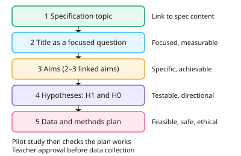

A-level Geography Year 13 · Topic 11
Geography fieldwork investigation (NEA)
The geography fieldwork investigation, or N E A, is your own independent research project.
We will choose a title and aims, plan fieldwork, and collect primary and secondary data.
Then we present and analyse data with statistics, draw conclusions, evaluate, and write up the investigation.
- 8 subtopics
- 439 questions
- Free: 11.1 notes and 10 questions
In this topic
- 11.1Choosing a title and aims: linking to the specification and forming research questions and hypothesesFree below · 27 questions
- 11.2Fieldwork planning: sampling strategies, risk assessment, ethics and pilot studiesOpen in Full Marks · 70 questions
- 11.3Primary data collection: quantitative and qualitative methods in physical and human geographyOpen in Full Marks · 75 questions
- 11.4Secondary data and GIS: sourcing, evaluating and using dataOpen in Full Marks · 72 questions
- 11.5Data presentation: graphs, maps and cartographic and ICT techniquesOpen in Full Marks · 59 questions
- 11.6Statistical analysis: Spearman's rank, chi-squared, t-test, Mann-Whitney U, central tendency and dispersionOpen in Full Marks · 65 questions
- 11.7Analysis, conclusions and evaluation: reliability, validity and limitationsOpen in Full Marks · 38 questions
- 11.8Writing up the independent investigation: structure, word limit, referencing and reflectionOpen in Full Marks · 33 questions
11.1 · Free notes
Choosing a title and aims: linking to the specification and forming research questions and hypotheses

Key points
- The NEA (independent investigation) is 3,000–4,000 words and worth 20% of the A-level for AQA, OCR and Edexcel. It must be built on primary data you collect yourself, supported by secondary data.
- The title must link to specification content, for example river channel processes, regeneration, coastal systems or ecosystems under stress. It needs teacher approval so that it is accessible, safe and manageable.
- Frame the title as a focused research question (e.g. 'To what extent does velocity increase downstream on the River X?'). Avoid broad or descriptive titles such as 'A study of rivers'.
- Write 2–3 aims that break the question into investigable parts, using command words such as investigate, compare and assess. Each aim should lead to specific data you can collect.
- Write testable hypotheses. The alternative hypothesis (H1) predicts a relationship or difference, ideally directional (e.g. 'sediment size decreases with distance from the cliff'). The null hypothesis (H0) states there is no significant relationship or difference.
- Identify the independent variable (the one you change or sample along, such as distance) and the dependent variable (the one you measure, such as pebble size). State any control variables, such as the same time of day.
- Operationalise abstract concepts so they can be measured. For example, turn 'environmental quality' into a bipolar score (−2 to +2) for litter, graffiti and building condition, or turn 'quality of life' into questionnaire scales.
- Anchor the investigation in geographical theory or models (Bradshaw model, bid-rent theory, Burgess/Hoyt models, ecological succession, distance decay). The findings can then be evaluated against that theory.
- Justify location and scale: a contained, accessible site that shows clear variation in the variable studied and allows enough sample points. About 10 or more paired observations are needed for a Spearman's rank test.
- State the significance level in advance. Rejecting H0 at the 5% level means the pattern would arise by chance in fewer than 5 in 100 cases. This does not prove causation.
- Avoid titles that are too broad, have an obvious answer, rely on one measurement, or need data you cannot obtain. Check feasibility in terms of time, cost, safety and access to secondary data.
In more detail
- Good title: "How and why does pedestrian footfall change with distance from Bristol's city centre?" is focused, measurable and linked to the specification.
- Specification link: tie the investigation to a topic you study, such as changing places, coasts or water and carbon.
- Hypotheses: H₁: "Footfall decreases with distance from the centre"; H₀: "There is no significant relationship between footfall and distance."
- Scale: small enough to complete in a few days of fieldwork, large enough to give meaningful data.
- Literature: read relevant theory, such as the Bradshaw model or bid-rent theory, to frame your expectations.
Practice
Choosing a title and aims: linking to the specification and forming research questions and hypotheses: 10 questions
Pick an answer to check it, or open the answer for the explanation.
1. Which title is most suitable for an A-level geography NEA?
- Why rivers matter to people
- The history of flood defences
- To what extent does mean velocity increase with distance downstream on the River Dove?
- A study of rivers
Show answer
C: To what extent does mean velocity increase with distance downstream on the River Dove?. It is focused, measurable, linked to specification content (river processes) and testable with primary data. The other titles are too broad or not fieldwork-based.
2. In the hypothesis 'Beach pebble size decreases with distance from the cliff', what is the independent variable?
- Beach width
- Pebble size
- Distance from the cliff
- Wave energy
Show answer
C: Distance from the cliff. The independent variable is the factor you sample along or change: distance from the cliff. Pebble size is the dependent variable, which responds to it.
3. Why is it better to focus on one river catchment than on 'rivers in England'?
- It means secondary data cannot be used
- It guarantees a significant result
- It removes the need for a hypothesis
- It allows enough depth of data within the time, cost and safety limits
Show answer
D: It allows enough depth of data within the time, cost and safety limits. A narrow, accessible study area makes primary data collection feasible and allows depth of analysis. It does not guarantee results or remove the need for hypotheses.
4. What is the permitted word range for the A-level geography NEA across AQA, OCR and Edexcel?
- 3,000–4,000 words
- 5,000–6,000 words
- 2,000–3,000 words
- 1,500–2,000 words
Show answer
A: 3,000–4,000 words. All three boards set the independent investigation at 3,000–4,000 words, worth 20% of the A-level.
5. A student wants to study 'environmental quality' on a regeneration site. Which approach best makes the concept measurable?
- Score litter, graffiti and building condition on a −2 to +2 bipolar scale
- Take a field sketch of each street
- Record the weather at each site
- Say whether each street looks nice
Show answer
A: Score litter, graffiti and building condition on a −2 to +2 bipolar scale. Operationalising turns an abstract idea into measurable indicators scored on a consistent scale. The other options give no comparable, quantifiable data.
6. Which research question is least suitable because the student's own fieldwork cannot answer it?
- Does perceived safety differ by time of day in Town Y's centre?
- How does pebble size vary along Beach X?
- How will global sea level change by 2100?
- How does bare-ground cover change with distance from a dune path?
Show answer
C: How will global sea level change by 2100?. Global sea-level change cannot be investigated with a student's own primary data. The others are local, measurable and feasible.
7. Which hypothesis is directional?
- Soil pH is related to distance from the sea
- Soil pH might change somewhere on the dune
- Soil pH decreases with distance from the sea
- There is no difference in soil pH along the transect
Show answer
C: Soil pH decreases with distance from the sea. A directional hypothesis predicts the direction of change ('decreases'). The others are non-directional or null statements.
8. Why should the aims link to a model or theory such as Bradshaw's model or bid-rent theory?
- To avoid collecting primary data
- To replace the need for a risk assessment
- To make the hypotheses non-directional
- To give a framework against which the findings can be evaluated
Show answer
D: To give a framework against which the findings can be evaluated. Theory provides expected patterns, so results can be compared with it and conclusions evaluated. It does not replace primary data or risk assessment.
9. Which is the strongest justification for choosing a fieldwork site?
- It is the cheapest to reach
- It is where the student lives
- It is the largest site available
- It is safe and accessible and shows clear variation in the variable studied
Show answer
D: It is safe and accessible and shows clear variation in the variable studied. A good site choice is justified by geographical suitability, safety and feasibility. Convenience or size alone is weak justification.
10. Which statement is best written as an investigation aim?
- To visit the River Dove
- To prove that the Bradshaw model is right
- To collect data on rivers
- To investigate the extent to which channel cross-sectional area increases downstream
Show answer
D: To investigate the extent to which channel cross-sectional area increases downstream. A good aim is specific, geographical and investigable ('to investigate the extent to which…'). It tests a model rather than assuming it is right.
Keep going in Full Marks
Full Marks has 27 questions on Choosing a title and aims: linking to the specification and forming research questions and hypotheses (17 more than here), set out in practice levels. You also get notes and 3D models for all 8 subtopics of Geography fieldwork investigation (NEA), plus games, timed exams and past papers.
On your exam board
- AQATopic NEA: Geography fieldwork investigation
- OCR ATopic NEA: Investigative geography
- EdexcelTopic NEA: Independent investigation
Not in the Cambridge specification.